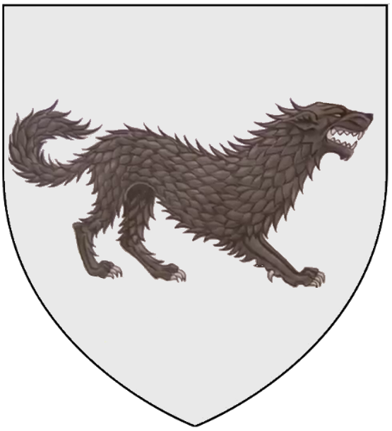
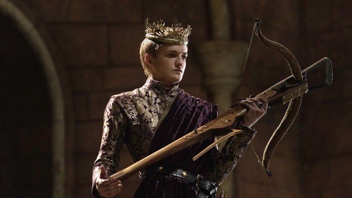
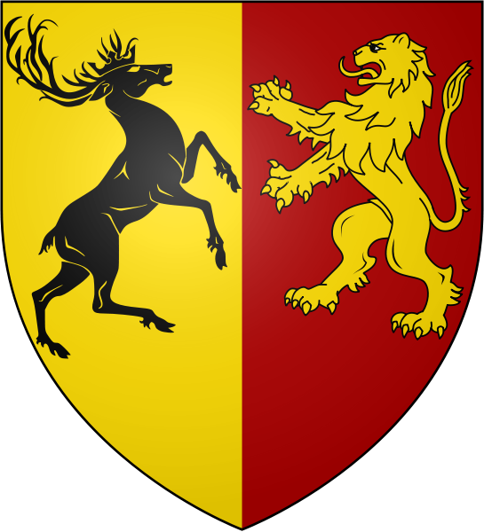
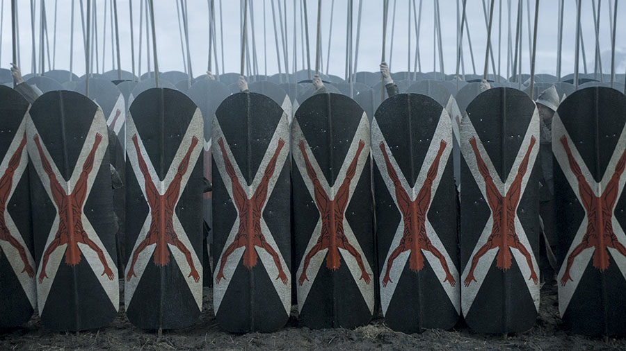
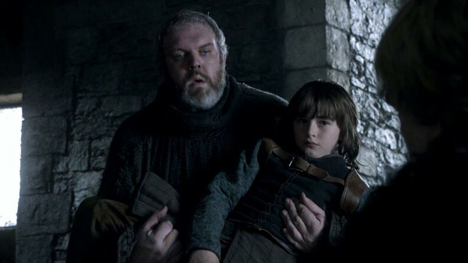

Daenerys
La reina Daenerys Targaryen, también llamada Daenerys de la Tormenta, La que no Arde, Rompedora de Cadenas, Madre de Dragones y, de manera más informal, Dany, es la hija menor del rey Aerys II Targaryen.
Jon Nieve
Lord Jon Nieve es el Lord Comandante de la Guardia de la Noche nº 998. Es hijo bastardo de Lord Eddard Stark. Su lobo huargo, Fantasma, es albino y mudo. El emblema personal de Jon consiste en los colores de la Casa.


Joffrey Baratheon
El rey Joffrey Baratheon fue Rey de los Siete Reinos desde 298 d.C. hasta su muerte en 300 d.C.. Fue, oficialmente, el hijo primogénito del rey Robert Baratheon y la reina Cersei Lannister; sin embargo, su padre biológico es Jaime Lannister, el hermano de la reina. Tiene dos hermanos, Myrcella y Tommen

La batalla del bosque verde
Inteligente tácticamente, demostrando que solamente se podía acabar con Robb Stark fuera del campo de batalla, pero ejecutada básicamente en off.

EL ASALTO DE DREADFORT
Un fallido intento de rescate de Theon por parte de Yara. Una escena breve con escaso combate que sirve principalmente para asentar más la amenaza que representa Ramsay y sus perros.
